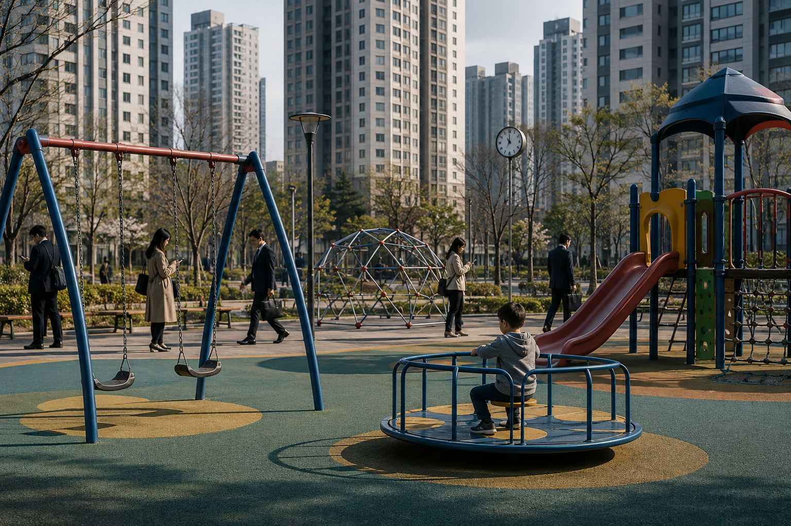
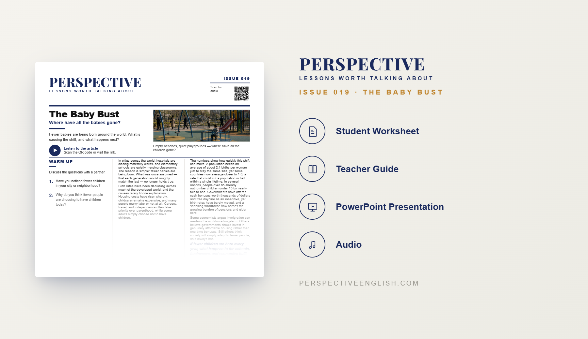

ISSUE 019
Birth Rates ESL Lesson: The Baby Bust
Where have all the babies gone?
A ready-to-teach ESL lesson exploring falling birth rates, population decline, changing family choices and aging societies, with reading, listening, vocabulary, discussion and critical-thinking activities for B1–B2 English learners.
Collection 03 includes Issues 016–020.

LESSON PREVIEW

ABOUT THIS LESSON
About This Birth Rates ESL Lesson
Birth rates are falling in countries around the world. Many young adults are delaying parenthood, having fewer children or deciding not to become parents at all, creating major demographic changes for some societies.
This B1–B2 Birth Rates ESL lesson explores the financial, social and personal reasons behind falling birth rates. Students consider the cost of raising children, housing, work pressures and changing family choices, as well as what population decline could mean for aging societies.
The lesson combines an original reading and audio with vocabulary, comprehension, discussion questions and critical-thinking activities. Students use English to discuss family choices, affordability, government responsibility, aging populations and how falling birth rates could affect schools, workplaces, pensions and public services.
FROM THE ARTICLE
WHAT'S INCLUDED
What's Included in the Birth Rates Lesson?
- Magazine-style B1–B2 ESL student worksheet
- Original birth rates reading and audio recording
- Vocabulary and reading comprehension activities
- Population and family discussion questions and critical-thinking tasks
- Speaking challenge and writing prompt
- Teacher guide and complete answer key
- Ready-to-use classroom presentation
GET THE COMPLETE LESSON
Ready to Teach The Baby Bust?
Get the complete Birth Rates ESL lesson individually or save with Perspective Collection 03.
Secure checkout and instant digital delivery through Payhip.